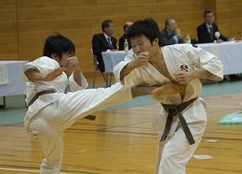
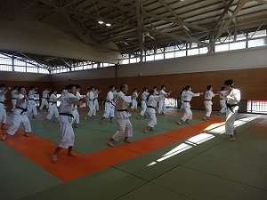
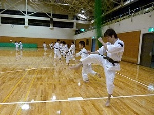
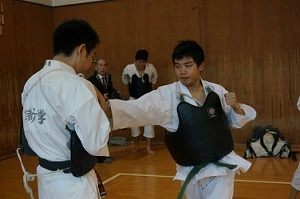
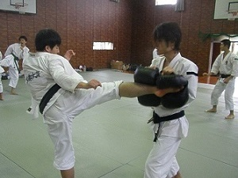
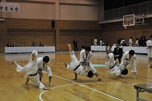
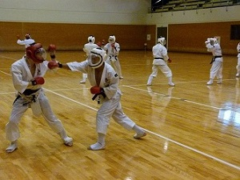
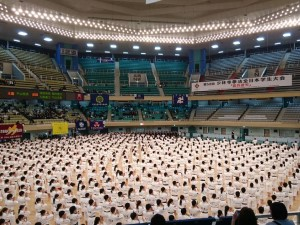

京都大学体育会少林寺拳法部
活動内容
練習時間・場所
| 月 | 午後7:00～9:00 | 体育館第二武道場 |
| 火 | 午後5:00～7:00 | 体育館第二武道場 |
| 木 | 午後5:00～7:00 | 体育館第二武道場 |
| 金 | 午後7:00～9:00 | 体育館第一武道場 |
少林寺拳法とは？

「少林寺拳法」と聞いて、サッカーやラクロスを連想したそこのあなた！…映画の観すぎですよ！うちの部に入っても、残念ながらボールが火を噴いたりはしません(笑)
では、少林寺拳法とは？…一言で言えば護身術です。暴力に対抗する技術と心構えを身につけることを目的としています。
中国の少林武術と親戚関係ではありますが、1947年に宗道臣先生によって創始された日本発の武道で、その最大の特長は、突き・蹴りといった「剛法」と、投げ・固めといった「柔法」の両方のエッセンスを盛り込んでいるという点です。
大会では、これらの技を組み合わせた動きのキレや正確度や美しさを競う「演武」と、防具を装備し安全を確保した上でポイント制で打撃戦を行う「運用法」が実施されています。
練習では、大会で競う演武、運用法の練習はもちろん、その基礎となる基本稽古や受身の練習、胴やミットを用いた練習、運用法よりも更に実戦を想定した乱捕など様々なメニューを行っています。
少林寺拳法は、腕力や体格に依らず老若男女あらゆる人が実践できる護身術なので、女性や体力に自信がない方でも全く問題ありません！
少しでも興味が湧いたという方は、是非とも一度、道場に見学にいらしてください。性別・回生・国籍などは一切不問で、部員一同心よりお待ちしております。
基本

全員で整列して、動作の確認や反復練習を行います。主座（前に立つ人）の指示に従い、その場で突きや蹴り、受けなどの動きを行います。
前身突き

基本の練習とは違い、前に進みながら突き蹴りなどの練習をします。前方に広い空間があり、また、いちいちその場に戻るということがないので、基本の練習に比べてより大きく動いたり、勢いよく前に出たりということを練習できます。
胴突き・胴蹴り

胴をつけた相手を突いたり、蹴ったりします。相手がいない状態で突き蹴りの練習をしているだけでは、その突き蹴りの実際の効果はわかりません。実際に胴をたたくことで、イメージと現実との間のギャップを埋めていきます。
ミット蹴り

ミットを相手に持ってもらい、それを蹴ります。胴蹴りでは主に前足底（足の裏の、指の付け根あたり）を相手に当てますが、ミット蹴りでは脛や、背足（足の甲）を当てます。ミットは胴に比べてやわらかく、より思い切り蹴る練習ができます。
演武

ある決まった（或いは、自分たちで作った）形を何回も練習することで、連続した動きで防御・反撃する技能を身につけます。
また、少林寺拳法の大会の多くは演武の上手さを競います。
乱捕

防具をつけて、格闘します。強くなるには、やはり実戦経験が必要です。もちろん、京大少林寺拳法部では適切な指導の下、十分に安全性を考慮しながら練習をしています。
行事
京都大学少林寺拳法部の行事は主に大会と合宿です。我が部は年間を通して多くの大会に出場しています。2018年は京都府大会、関西学生大会、山城ブロック交流大会、全日本学生大会、関西学生新人大会、京都学生大会、七大学総合体育大会などに出場しました。
賞も数多く受賞しました。成績はこちら、大会の写真集はこちらです。
合宿は春と夏の年二回行っています。どちらもおよそ一週間程度の期間、大学の長期休暇を利用して行っています。
一週間の間は寝ても覚めても少林寺拳法漬けの生活をして、技術の向上をはかります。